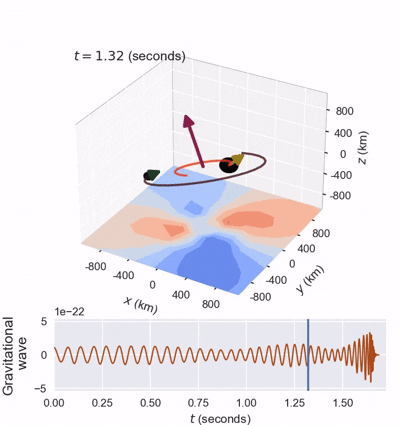
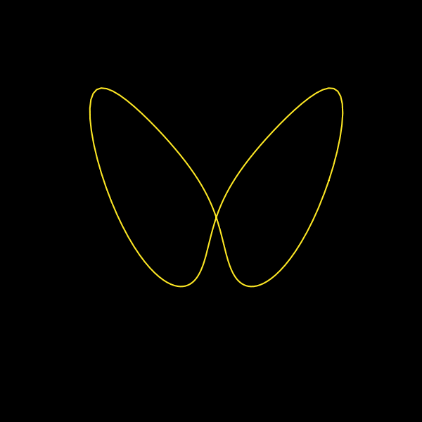
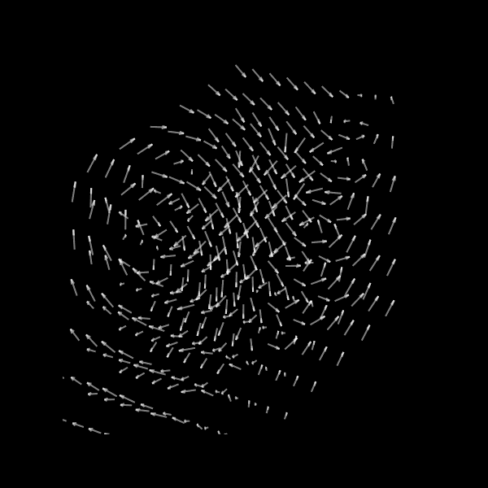
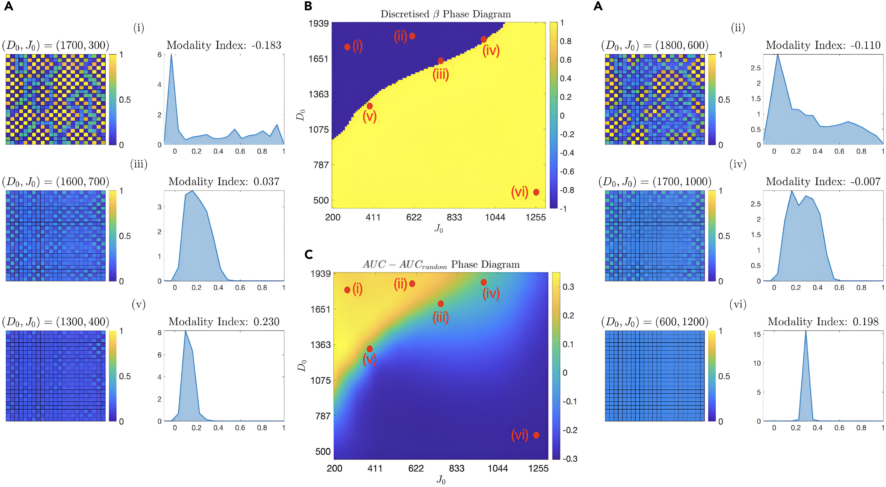

My Projects
-
Modelling Black Hole "Kicks"

A video simulation of a precessing black hole binary merger, generated with thanks to the Binary Black Hole Explorer team (Varma, Stein, et al., 2019).
I am currently working on simulation-based inference techniques to predict the recoil velocity of black hole mergers (called a 'kick'), that can lead to the merged remnant being ejected from its host galaxy. This phenomenon has garnered recent interest since its first observational measurement in gravitational wave data. I hope to include more on this project soon.
-
The Manifold of Unstable Periodic Orbits



Colloquially called the "skeleton of chaos", UPOs (as the name suggests) are periodic orbits that are dynamically unstable. They can represent and approximate chaotic systems, almost serving as a "basis" of simple states upon which the statistics of the system can be calculated. The special importance of such a decomposition is underlined when we recall that Fourier spectra of chaotic time series is long tailed. Chaos cannot be decomposed into sines and cosines!
I worked on developing a low-dimensional embedding of UPOs, in order to better detect, relate and generate them. More coming up soon!
-
Entropic Cell Decision Making
Pujar, Barua et al. “Microenvironmental entropy dynamics analysis reveals novel insights into Notch-Delta-Jagged decision-making mechanism.” iScience (2024). DOI: 10.1016/j.isci.2024.110569

The qualitative and quantitative parallels between the Notch-Delta-Jagged signaling network, a key player in cell decision-making and a purely phenomenological model built from information theory considerations. My Bachelor's and Master's theses incorporate different parts of this research.